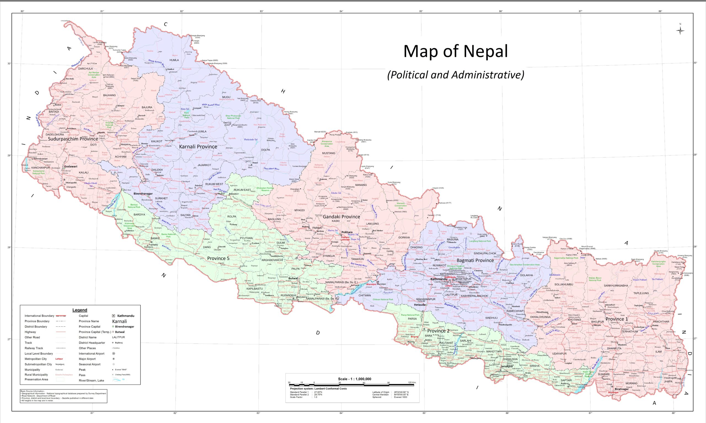

About Nepal
Nepal is a landlocked country located in South Asia. It is known for its stunning natural beauty, including the Himalayan mountains, which are home to eight of the world's ten tallest mountains, including Mount Everest.
Nepal is also rich in cultural heritage, with numerous temples, monasteries, and palaces that reflect the country's diverse history and traditions.
Nepal, country of Asia, lying along the southern slopes of the Himalayan mountain ranges. It is a landlocked country located between India to the east, south, and west and the Tibet Autonomous Region of China to the north. Its territory extends roughly 500 miles (800 kilometres) from east to west and 90 to 150 miles from north to south. The capital is Kathmandu.
Our History
The name Nepal is first recorded in texts from the Vedic period of the Indian subcontinent, the era in ancient India when Hinduism was founded, the predominant religion of the country. The Shah dynasty established the Kingdom of Nepal and later formed an alliance with the British Empire, under its Rajput Rana dynasty of premiers.
The country was never colonized but served as a buffer state between Imperial China and British India. Parliamentary democracy was introduced in 1951, but was twice suspended by Nepalese monarchs, in 1960 and 2005. The Nepalese Civil War in the 1990's and early 2000's resulted in the proclamation of a secular republic in 2008, ending the world's last Hindu monarchy.

The Only Triangular Flag
The national flag of Nepal is the world's only national flag that is non-quadrilateral in shape. The flag is a simplified combination of two single pennons, the vexillological word for a pennant. Its crimson red is the color of the rhododendron, the country's national flower.The flag is a simplified combination of two single pennons (or pennants), known as a double-pennon. Its crimson red is the symbol of bravery and it also represents the color of the rhododendron, Nepal's national flower, while the blue border is the color of peace.

All in all Nepal has a very rich and diverse culture and tradition.If you want to know more please visit the following webpage. History of Nepal
Tourist Attractions
Some popular tourist attractions in Nepal include the ancient city of Kathmandu, the beautiful lake city of Pokhara, and the Chitwan National Park, which is home to a variety of wildlife, including the Bengal tiger and the one-horned rhinoceros.
Nepal with rich ancient cultures set against the most dramatic scenery in the world is a land of discovery and unique experience. For broad minded individuals who value an experience that is authentic and mesmerizing, Nepal is the ideal destination. Come and revel in the untouched and the undiscovered and uncover yourself. It is unsurpassed that the sheer diversity Nepal boasts, from steamy jungle and Terai to the icy peaks of the world's highest mountains means that the range of activities on offer. Trekking, mountaineering, rafting in spectacular scenery are just three things Nepal is famous for. Activities as diverse as Elephant Polo and a micro-light flight through the Himalayas show that in Nepal, the only boundary is your imagination. With 15 National & Wildlife Parks (two are UNESCO Heritage sites) Nepal is one of the last places on earth you can spot the Asiatic rhinoceros and the Royal Bengal Tiger.
Contact Us
For more information about Nepal, please contact us at info@nepal-tourism.com.